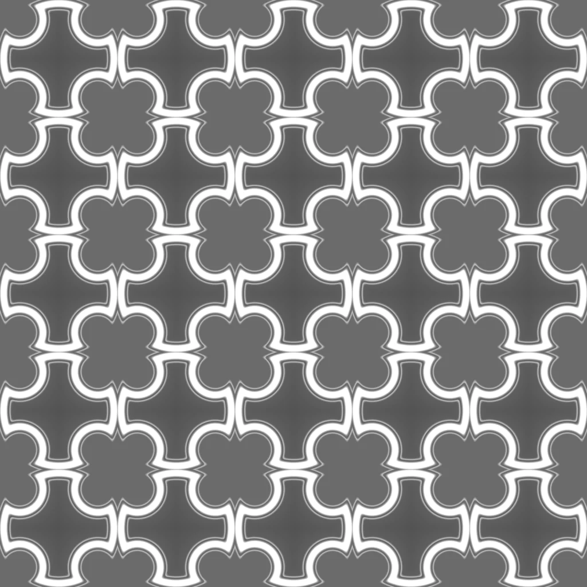
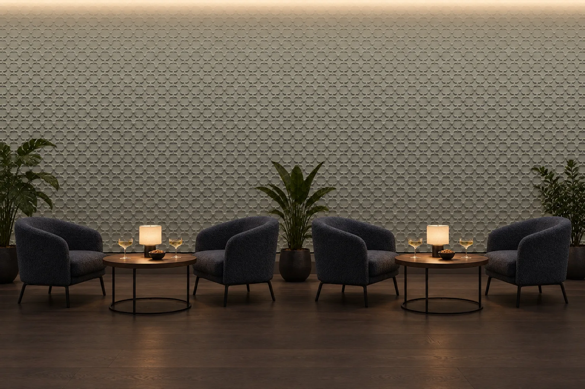
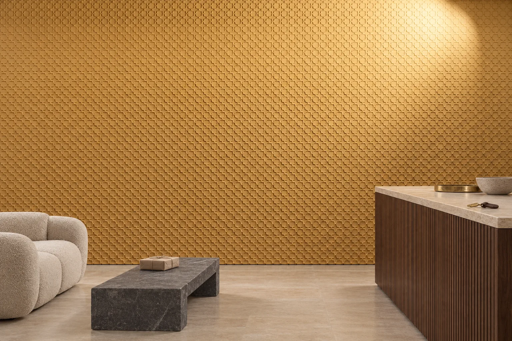
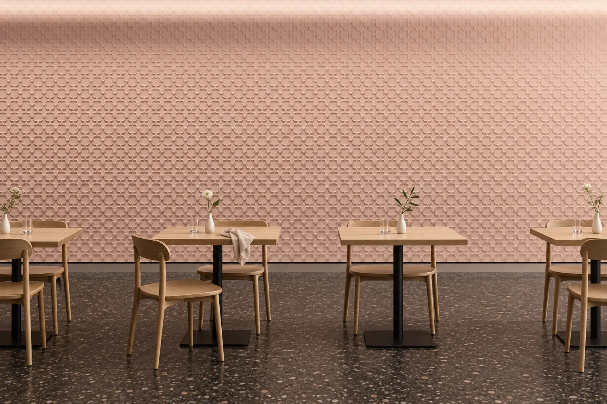

Ricercar
A lattice built from the Gothic quatrefoil. The pattern repeats every 600 mm, and the lattice carries on across the wall as panels are laid side by side.

- Size
- 600 × 600 mm
- Relief
- 6 mm
- Layout
- Repeating field, every 600 mm
- Material
- Lumina PMAG™ (polymer-modified composite gypsum)
- Surface
- Paint-ready, or with an artisan finish



The pattern
Ricercar builds a lattice from the quatrefoil of Gothic architecture. The motif does not stop at the edge of a panel: it repeats every 600 mm, and the lattice carries on across the wall as panels are laid side by side. This is the design of a wall surface, not of a single panel.
The relief is 6 mm deep, which is shallow. That shallowness keeps the lines of the lattice soft and regular; the pattern reads as a fine network of lines rather than as a heavy mass.
How it reads in light
The image at the top of the page is in live light. When the light comes from the side, the edges of the quatrefoils and the lines of the lattice sharpen; in head-on light the lattice recedes and the surface calms. In a repeating pattern, the direction of the light changes the whole character of a wall.
On the wall
Ricercar is designed around a 600 × 600 mm repeat unit, and its layout is a field layout. It suits a broad wall, a column face or a partition panel carried in the same pattern. On a small wall only a few repeats show, and they read as one group. Because the lattice repeats, where the pattern is cut at the edges and corners of a wall is a detail decided together on the layout drawing.
In a room



To see how this design would sit on your wall, send the wall dimensions.